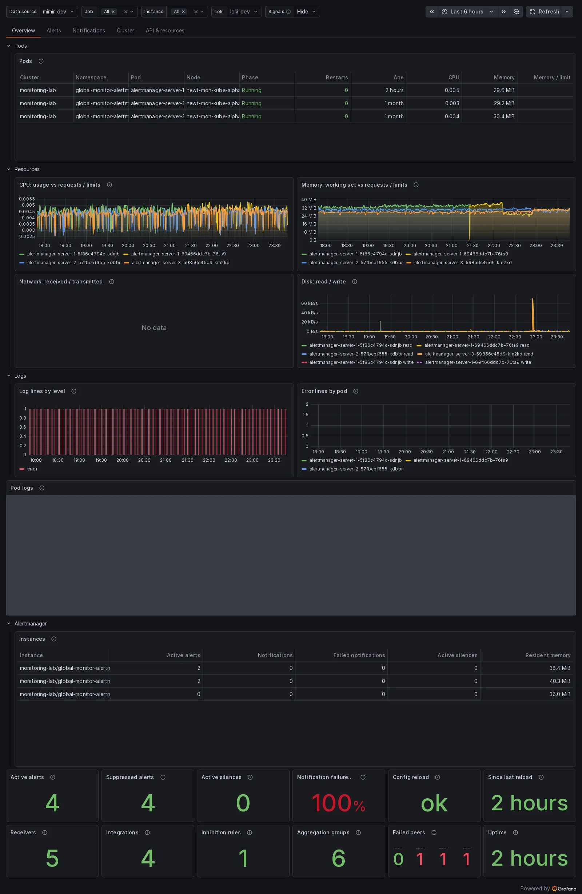
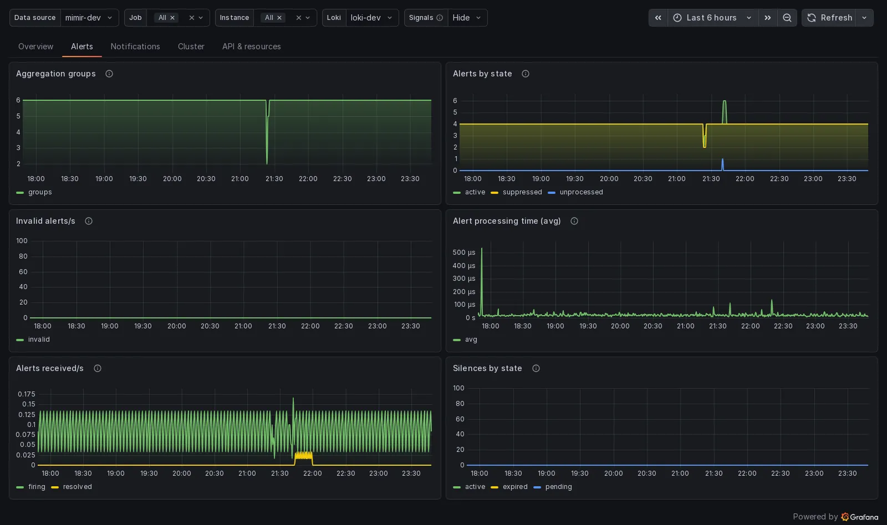
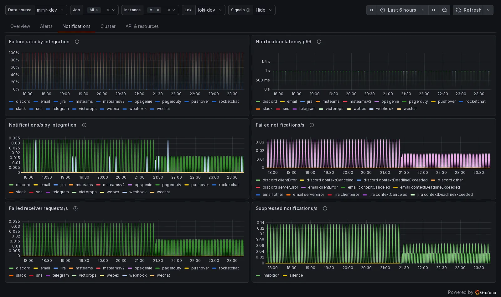
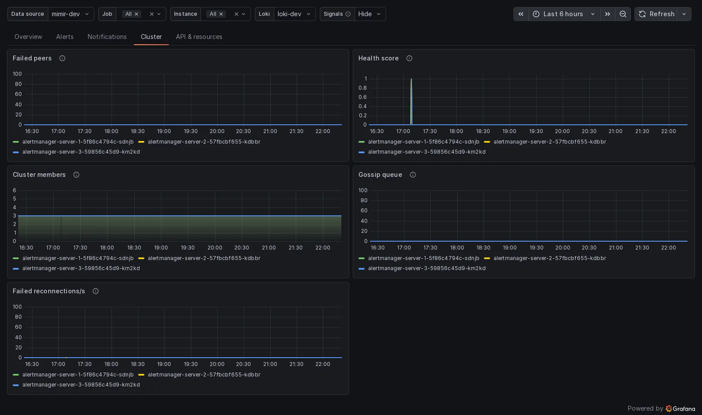
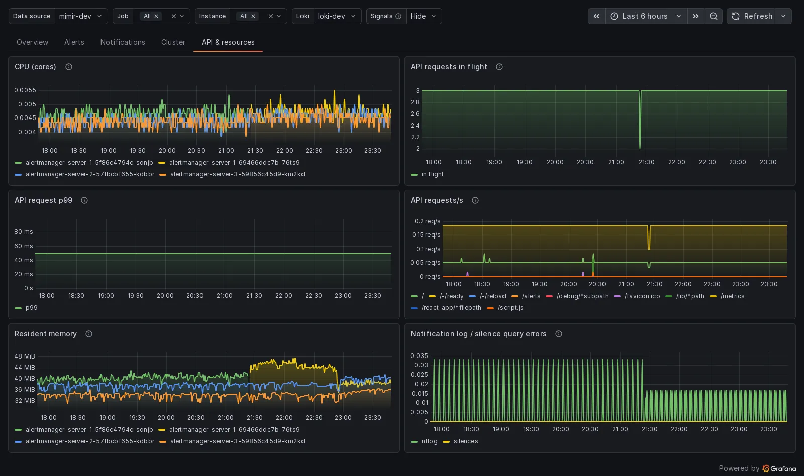

Alertmanager¶
Prometheus Alertmanager self-monitoring: alerts received and active, notifications per integration with failures and latency, silences, the gossip cluster and configuration reloads.
| Library | g.libs.monitoring.alertmanager |
|---|---|
| Board | observ-viz-alertmanager in Platform / Monitoring / Alerting · 5 tabs rendered |
| Wrapped by | Alertmanager |
| Collectors | app-exporters / apps |
| Contents | 34 signals · 32 metrics · 6 alert rules with runbooks · 2 recording rules · the board |
Signals¶
Each signal: what it shows, the metrics its query reads, its unit, the query the board runs and the recording rule it produces (if any).
| Signal | Metrics | Unit | Query | Recorded as |
|---|---|---|---|---|
Aggregation groupsaggregationGroupsAlert groups the dispatcher currently tracks. |
alertmanager_dispatcher_aggregation_groups |
short | sum(alertmanager_dispatcher_aggregation_groups{job=~"$job", instance=~"$instance"}) |
— |
Active alertsalertsActiveAlerts currently active in Alertmanager. |
alertmanager_alerts |
short | sum(alertmanager_alerts{job=~"$job", instance=~"$instance", state="active"}) |
— |
Alerts by statealertsByStateAlerts currently held, by state: active (firing or pending notification) and suppressed (silenced or inhibited). |
alertmanager_alerts |
short | sum by (state) (alertmanager_alerts{job=~"$job", instance=~"$instance"}) |
— |
Suppressed alertsalertsSuppressedAlerts currently silenced or inhibited. |
alertmanager_alerts |
short | sum(alertmanager_alerts{job=~"$job", instance=~"$instance", state="suppressed"}) |
— |
Failed peersclusterFailedPeersPeers an instance considers failed. Above zero the cluster is partitioned and notifications may duplicate. |
alertmanager_cluster_failed_peers |
short | alertmanager_cluster_failed_peers{job=~"$job", instance=~"$instance"} |
— |
Cluster health scoreclusterHealthMemberlist health score: 0 is healthy, higher means the instance is struggling to keep up with gossip. |
alertmanager_cluster_health_score |
short | alertmanager_cluster_health_score{job=~"$job", instance=~"$instance"} |
— |
Cluster membersclusterMembersPeers each instance sees in the gossip cluster. All instances should agree on the same number. |
alertmanager_cluster_members |
short | alertmanager_cluster_members{job=~"$job", instance=~"$instance"} |
— |
Gossip queueclusterQueuedGossip messages waiting to be sent to peers. |
alertmanager_cluster_messages_queued |
short | alertmanager_cluster_messages_queued{job=~"$job", instance=~"$instance"} |
— |
Failed reconnectionsclusterReconnectFailedFailed attempts to reconnect to a peer per second. |
alertmanager_cluster_reconnections_failed_total |
short | sum by (pod) (rate(alertmanager_cluster_reconnections_failed_total{job=~"$job", instance=~"$instance"}[$__rate_interval])) |
— |
CPUcpuCPU cores used by the Alertmanager process. |
process_cpu_seconds_total |
short | rate(process_cpu_seconds_total{job=~"$job", instance=~"$instance"}[$__rate_interval]) |
— |
Notification failure ratiofailureRatioShare of notifications that failed, by integration. Above 1 percent sustained means a receiver is broken. |
alertmanager_notifications_failed_totalalertmanager_notifications_total |
percentunit | sum by (integration) (rate(alertmanager_notifications_failed_total{job=~"$job", instance=~"$instance"}[$__rate_interval])) / sum by (integration) (rate(alertmanager_notifications_total{job=~"$job", instance=~"$instance"}[$__rate_interval])) |
integration:alertmanager_notifications_failed:ratio_rate5m |
Notification failure ratiofailureRatioTotalShare of all notifications that failed. |
alertmanager_notifications_failed_totalalertmanager_notifications_total |
percentunit | sum(rate(alertmanager_notifications_failed_total{job=~"$job", instance=~"$instance"}[$__rate_interval])) / sum(rate(alertmanager_notifications_total{job=~"$job", instance=~"$instance"}[$__rate_interval])) |
— |
API requests in flighthttpInFlightAPI requests currently being served. |
alertmanager_http_requests_in_flight |
short | sum(alertmanager_http_requests_in_flight{job=~"$job", instance=~"$instance"}) |
— |
API request p99httpP99Slowest 1 percent of API requests. |
alertmanager_http_request_duration_seconds_bucket |
s | histogram_quantile(0.99, sum by (le) (rate(alertmanager_http_request_duration_seconds_bucket{job=~"$job", instance=~"$instance"}[$__rate_interval]))) |
— |
API requestshttpRateAPI requests per second by handler. |
alertmanager_http_request_duration_seconds_count |
reqps | sum by (handler) (rate(alertmanager_http_request_duration_seconds_count{job=~"$job", instance=~"$instance"}[$__rate_interval])) |
— |
Inhibition rulesinhibitionRulesInhibition rules in the loaded configuration. |
alertmanager_inhibition_rules |
short | max(alertmanager_inhibition_rules{job=~"$job", instance=~"$instance"}) |
— |
IntegrationsintegrationsIntegrations (receiver endpoints) in the loaded configuration. |
alertmanager_integrations |
short | max(alertmanager_integrations{job=~"$job", instance=~"$instance"}) |
— |
Invalid alertsinvalidAlerts rejected by the API per second (malformed labels or timestamps). Anything above zero means a misbehaving sender. |
alertmanager_alerts_invalid_total |
short | sum(rate(alertmanager_alerts_invalid_total{job=~"$job", instance=~"$instance"}[$__rate_interval])) |
— |
Notification log query errorsnflogErrorsErrors querying the notification log per second (the deduplication state). |
alertmanager_nflog_query_errors_total |
short | sum(rate(alertmanager_nflog_query_errors_total{job=~"$job", instance=~"$instance"}[$__rate_interval])) |
— |
Notification latency p99notificationP99Slowest 1 percent of notification deliveries, by integration. |
alertmanager_notification_latency_seconds_bucket |
s | histogram_quantile(0.99, sum by (le, integration) (rate(alertmanager_notification_latency_seconds_bucket{job=~"$job", instance=~"$instance"}[$__rate_interval]))) |
— |
NotificationsnotificationsNotifications attempted per second, by integration. |
alertmanager_notifications_total |
short | sum by (integration) (rate(alertmanager_notifications_total{job=~"$job", instance=~"$instance"}[$__rate_interval])) |
— |
Failed notificationsnotificationsFailedNotifications that failed per second, by integration and reason (clientError, serverError, contextCanceled...). |
alertmanager_notifications_failed_total |
short | sum by (integration, reason) (rate(alertmanager_notifications_failed_total{job=~"$job", instance=~"$instance"}[$__rate_interval])) |
— |
Alert processing timeprocessingAvgAverage time the dispatcher spends processing an alert. |
alertmanager_dispatcher_alert_processing_duration_seconds_countalertmanager_dispatcher_alert_processing_duration_seconds_sum |
s | sum(rate(alertmanager_dispatcher_alert_processing_duration_seconds_sum{job=~"$job", instance=~"$instance"}[$__rate_interval])) / sum(rate(alertmanager_dispatcher_alert_processing_duration_seconds_count{job=~"$job", instance=~"$instance"}[$__rate_interval])) |
— |
Alerts receivedreceivedAlerts posted to the API per second, firing and resolved. |
alertmanager_alerts_received_total |
short | sum by (status) (rate(alertmanager_alerts_received_total{job=~"$job", instance=~"$instance"}[$__rate_interval])) |
— |
ReceiversreceiversReceivers in the loaded configuration. |
alertmanager_receivers |
short | max(alertmanager_receivers{job=~"$job", instance=~"$instance"}) |
— |
Since last reloadreloadAgeTime since the last successful configuration reload. |
alertmanager_config_last_reload_success_timestamp_seconds |
dtdurations | time() - max(alertmanager_config_last_reload_success_timestamp_seconds{job=~"$job", instance=~"$instance"}) |
— |
Config reload okreloadOk1 while the last configuration reload succeeded on every instance; 0 means an instance is running a stale configuration. |
alertmanager_config_last_reload_successful |
short | min(alertmanager_config_last_reload_successful{job=~"$job", instance=~"$instance"}) |
— |
Failed notification requestsrequestsFailedIndividual HTTP requests to receivers that failed per second (a notification may retry several requests). |
alertmanager_notification_requests_failed_total |
short | sum by (integration) (rate(alertmanager_notification_requests_failed_total{job=~"$job", instance=~"$instance"}[$__rate_interval])) |
— |
Resident memoryrssResident memory of the Alertmanager process. |
process_resident_memory_bytes |
bytes | process_resident_memory_bytes{job=~"$job", instance=~"$instance"} |
— |
Silence query errorssilenceErrorsErrors querying silences per second. |
alertmanager_silences_query_errors_total |
short | sum(rate(alertmanager_silences_query_errors_total{job=~"$job", instance=~"$instance"}[$__rate_interval])) |
— |
SilencessilencesSilences by state: active, pending, expired. |
alertmanager_silences |
short | sum by (state) (alertmanager_silences{job=~"$job", instance=~"$instance"}) |
— |
Active silencessilencesActiveSilences currently in effect. |
alertmanager_silences |
short | sum(alertmanager_silences{job=~"$job", instance=~"$instance", state="active"}) |
— |
Suppressed notificationssuppressedNotifications not sent per second because of a silence, inhibition or mute time interval. |
alertmanager_notifications_suppressed_total |
short | sum by (reason) (rate(alertmanager_notifications_suppressed_total{job=~"$job", instance=~"$instance"}[$__rate_interval])) |
— |
UptimeuptimeTime since the oldest Alertmanager instance started. |
process_start_time_seconds |
dtdurations | min(time() - process_start_time_seconds{job=~"$job", instance=~"$instance"}) |
— |
Metrics¶
Every metric the library reads, the collector that produces it, and what reads it.
| Metric | Collector | Signals | Alert rules | Recording rules |
|---|---|---|---|---|
alertmanager_alerts |
app-exporters / apps | alertsActive, alertsByState, alertsSuppressed |
— | — |
alertmanager_alerts_invalid_total |
app-exporters / apps | invalid |
— | — |
alertmanager_alerts_received_total |
app-exporters / apps | received |
— | job:alertmanager_alerts_received:rate5m |
alertmanager_build_info |
app-exporters / apps | — | AlertmanagerDown | — |
alertmanager_cluster_failed_peers |
app-exporters / apps | clusterFailedPeers |
AlertmanagerClusterFailedPeers | — |
alertmanager_cluster_health_score |
app-exporters / apps | clusterHealth |
— | — |
alertmanager_cluster_members |
app-exporters / apps | clusterMembers |
— | — |
alertmanager_cluster_messages_queued |
app-exporters / apps | clusterQueued |
— | — |
alertmanager_cluster_reconnections_failed_total |
app-exporters / apps | clusterReconnectFailed |
— | — |
alertmanager_config_last_reload_success_timestamp_seconds |
app-exporters / apps | reloadAge |
— | — |
alertmanager_config_last_reload_successful |
app-exporters / apps | reloadOk |
AlertmanagerFailedReload | — |
alertmanager_dispatcher_aggregation_groups |
app-exporters / apps | aggregationGroups |
— | — |
alertmanager_dispatcher_alert_processing_duration_seconds_count |
app-exporters / apps | processingAvg |
— | — |
alertmanager_dispatcher_alert_processing_duration_seconds_sum |
app-exporters / apps | processingAvg |
— | — |
alertmanager_http_request_duration_seconds_bucket |
app-exporters / apps | httpP99 |
— | — |
alertmanager_http_request_duration_seconds_count |
app-exporters / apps | httpRate |
— | — |
alertmanager_http_requests_in_flight |
app-exporters / apps | httpInFlight |
— | — |
alertmanager_inhibition_rules |
app-exporters / apps | inhibitionRules |
— | — |
alertmanager_integrations |
app-exporters / apps | integrations |
— | — |
alertmanager_nflog_query_errors_total |
app-exporters / apps | nflogErrors |
— | — |
alertmanager_notification_latency_seconds_bucket |
app-exporters / apps | notificationP99 |
— | — |
alertmanager_notification_requests_failed_total |
app-exporters / apps | requestsFailed |
— | — |
alertmanager_notifications_failed_total |
app-exporters / apps | failureRatio, failureRatioTotal, notificationsFailed |
AlertmanagerClusterFailedToSendAlerts, AlertmanagerFailedToSendAlerts | integration:alertmanager_notifications_failed:ratio_rate5m |
alertmanager_notifications_suppressed_total |
app-exporters / apps | suppressed |
— | — |
alertmanager_notifications_total |
app-exporters / apps | failureRatio, failureRatioTotal, notifications |
AlertmanagerClusterFailedToSendAlerts, AlertmanagerFailedToSendAlerts | integration:alertmanager_notifications_failed:ratio_rate5m |
alertmanager_receivers |
app-exporters / apps | receivers |
— | — |
alertmanager_silences |
app-exporters / apps | silences, silencesActive |
— | — |
alertmanager_silences_query_errors_total |
app-exporters / apps | silenceErrors |
— | — |
process_cpu_seconds_total |
app-exporters / apps | cpu |
— | — |
process_resident_memory_bytes |
app-exporters / apps | rss |
— | — |
process_start_time_seconds |
app-exporters / apps | uptime |
AlertmanagerClusterCrashlooping | — |
up |
app-exporters / apps | — | AlertmanagerDown | — |
Alert rules¶
| Alert | Severity | For | Expression | Runbook |
|---|---|---|---|---|
AlertmanagerDownAlertmanager {{ $labels.instance }} is down. |
critical | 5m | (up == 0) and on (job, instance) (max_over_time(alertmanager_build_info[1d])) |
runbook |
AlertmanagerFailedReloadAlertmanager {{ $labels.instance }} failed to reload its configuration and runs a stale one. |
critical | 10m | max_over_time(alertmanager_config_last_reload_successful[5m]) == 0 |
runbook |
AlertmanagerClusterFailedPeersAlertmanager {{ $labels.instance }} lost contact with gossip peers; notifications may duplicate or be missed. |
warning | 15m | alertmanager_cluster_failed_peers > 0 |
runbook |
AlertmanagerFailedToSendAlertsAlertmanager {{ $labels.instance }} fails to send more than 1% of {{ $labels.integration }} notifications. |
warning | 5m | sum by (instance, integration) (rate(alertmanager_notifications_failed_total[5m])) / sum by (instance, integration) (rate(alertmanager_notifications_total[5m])) > 0.01 |
runbook |
AlertmanagerClusterFailedToSendAlertsEvery Alertmanager instance fails to send more than 1% of {{ $labels.integration }} notifications; the receiver is broken. |
critical | 5m | min by (integration) (sum by (instance, integration) (rate(alertmanager_notifications_failed_total[5m])) / sum by (instance, integration) (rate(alertmanager_notifications_total[5m]))) > 0.01 |
runbook |
AlertmanagerClusterCrashloopingAlertmanager {{ $labels.instance }} restarted more than 4 times in 10 minutes. |
critical | 0m | changes(process_start_time_seconds[10m]) > 4 |
runbook |
Recording rules¶
| Record | Expression |
|---|---|
integration:alertmanager_notifications_failed:ratio_rate5m |
sum by (integration) (rate(alertmanager_notifications_failed_total[5m])) / sum by (integration) (rate(alertmanager_notifications_total[5m])) |
job:alertmanager_alerts_received:rate5m |
sum by (job, status) (rate(alertmanager_alerts_received_total[5m])) |
Runbooks¶
One per alert rule - the runbook the rule carries, or one generated from it - the text the board's Runbooks tab shows. A rule without a written runbook links to its page here, runbooks/<alert>/, which shows the same text.
AlertmanagerDown · critical · for 5m
Meaning
Alertmanager {{ $labels.instance }} is down.
It fires when the expression below holds for 5m.
Impact
Something users depend on is already broken or about to be. Treat it as an incident.
Diagnosis
Run the alert expression and look at which series cross the threshold:
(up == 0) and on (job, instance) (max_over_time(alertmanager_build_info[1d]))
Then open this board with the same selectors: the tab that carries those metrics shows how long the series has been where it is, and the restart and deploy annotations show whether a release or a restart lines up with the change.
Mitigation
- Confirm the target is the one you think it is: check the labels on the firing series.
- Compare against the same series on a healthy peer; a single instance out of line is a different problem from every instance moving together.
- If a deploy or restart lines up with the change, that is the first thing to undo.
- If the threshold no longer matches how this service behaves, change the rule rather than living with a permanent alert.
AlertmanagerFailedReload · critical · for 10m
Meaning
Alertmanager {{ $labels.instance }} failed to reload its configuration and runs a stale one.
It fires when the expression below holds for 10m.
Impact
Something users depend on is already broken or about to be. Treat it as an incident.
Diagnosis
Run the alert expression and look at which series cross the threshold:
max_over_time(alertmanager_config_last_reload_successful[5m]) == 0
Then open this board with the same selectors: the tab that carries those metrics shows how long the series has been where it is, and the restart and deploy annotations show whether a release or a restart lines up with the change.
Mitigation
- Confirm the target is the one you think it is: check the labels on the firing series.
- Compare against the same series on a healthy peer; a single instance out of line is a different problem from every instance moving together.
- If a deploy or restart lines up with the change, that is the first thing to undo.
- If the threshold no longer matches how this service behaves, change the rule rather than living with a permanent alert.
AlertmanagerClusterFailedPeers · warning · for 15m
Meaning
Alertmanager {{ $labels.instance }} lost contact with gossip peers; notifications may duplicate or be missed.
It fires when the expression below holds for 15m.
Impact
Nothing is broken yet, and it will be if the trend holds. Look at it this working day.
Diagnosis
Run the alert expression and look at which series cross the threshold:
alertmanager_cluster_failed_peers > 0
Then open this board with the same selectors: the tab that carries those metrics shows how long the series has been where it is, and the restart and deploy annotations show whether a release or a restart lines up with the change.
Mitigation
- Confirm the target is the one you think it is: check the labels on the firing series.
- Compare against the same series on a healthy peer; a single instance out of line is a different problem from every instance moving together.
- If a deploy or restart lines up with the change, that is the first thing to undo.
- If the threshold no longer matches how this service behaves, change the rule rather than living with a permanent alert.
AlertmanagerFailedToSendAlerts · warning · for 5m
Meaning
Alertmanager {{ $labels.instance }} fails to send more than 1% of {{ $labels.integration }} notifications.
It fires when the expression below holds for 5m.
Impact
Nothing is broken yet, and it will be if the trend holds. Look at it this working day.
Diagnosis
Run the alert expression and look at which series cross the threshold:
sum by (instance, integration) (rate(alertmanager_notifications_failed_total[5m])) / sum by (instance, integration) (rate(alertmanager_notifications_total[5m])) > 0.01
Then open this board with the same selectors: the tab that carries those metrics shows how long the series has been where it is, and the restart and deploy annotations show whether a release or a restart lines up with the change.
Mitigation
- Confirm the target is the one you think it is: check the labels on the firing series.
- Compare against the same series on a healthy peer; a single instance out of line is a different problem from every instance moving together.
- If a deploy or restart lines up with the change, that is the first thing to undo.
- If the threshold no longer matches how this service behaves, change the rule rather than living with a permanent alert.
AlertmanagerClusterFailedToSendAlerts · critical · for 5m
Meaning
Every Alertmanager instance fails to send more than 1% of {{ $labels.integration }} notifications; the receiver is broken.
It fires when the expression below holds for 5m.
Impact
Something users depend on is already broken or about to be. Treat it as an incident.
Diagnosis
Run the alert expression and look at which series cross the threshold:
min by (integration) (sum by (instance, integration) (rate(alertmanager_notifications_failed_total[5m])) / sum by (instance, integration) (rate(alertmanager_notifications_total[5m]))) > 0.01
Then open this board with the same selectors: the tab that carries those metrics shows how long the series has been where it is, and the restart and deploy annotations show whether a release or a restart lines up with the change.
Mitigation
- Confirm the target is the one you think it is: check the labels on the firing series.
- Compare against the same series on a healthy peer; a single instance out of line is a different problem from every instance moving together.
- If a deploy or restart lines up with the change, that is the first thing to undo.
- If the threshold no longer matches how this service behaves, change the rule rather than living with a permanent alert.
AlertmanagerClusterCrashlooping · critical · for 0m
Meaning
Alertmanager {{ $labels.instance }} restarted more than 4 times in 10 minutes.
It fires when the expression below holds for 0m.
Impact
Something users depend on is already broken or about to be. Treat it as an incident.
Diagnosis
Run the alert expression and look at which series cross the threshold:
changes(process_start_time_seconds[10m]) > 4
Then open this board with the same selectors: the tab that carries those metrics shows how long the series has been where it is, and the restart and deploy annotations show whether a release or a restart lines up with the change.
Mitigation
- Confirm the target is the one you think it is: check the labels on the firing series.
- Compare against the same series on a healthy peer; a single instance out of line is a different problem from every instance moving together.
- If a deploy or restart lines up with the change, that is the first thing to undo.
- If the threshold no longer matches how this service behaves, change the rule rather than living with a permanent alert.
Building blocks¶
- Overview:
ov01_active,ov02_suppressed,ov03_silences,ov04_failureRatio,ov05_reloadOk,ov06_reloadAge,ov07_receivers,ov08_integrations,ov09_inhibitions,ov10_groups,ov11_failedPeers,ov12_uptime - Alerts:
aggregationGroups,alertsByState,invalid,processingAvg,received,silences - Notifications:
failureRatio,notificationP99,notifications,notificationsFailed,requestsFailed,suppressed - Cluster:
clusterFailedPeers,clusterHealth,clusterMembers,clusterQueued,clusterReconnectFailed - API & resources:
cpu,httpInFlight,httpP99,httpRate,rss,storeErrors
Board¶
Rendered from https://grafana.monlab.newt.cz on 2026-10-21T23:48Z: each tab as that Grafana draws it with its own data, so a panel without data there shows "No data"; log lines are masked.
Overview¶

Alerts¶

Notifications¶

Cluster¶

API & resources¶
